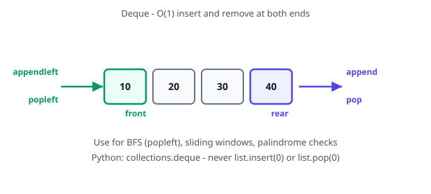

Deque (Double-Ended Queue)
A deque supports O(1) insert and delete at both front and rear. Python's collections.deque is the correct choice for queues, BFS, and sliding-window problems.
When to use a deque
| Scenario |
Why deque |
| BFS |
O(1) popleft (never use list.pop(0)) |
| Sliding window max/min |
Monotonic deque of indices |
| Palindrome check |
Compare from both ends |
| 0-1 BFS |
Push front (weight 0) or rear (weight 1) |
Complexity
| Operation |
collections.deque |
List with insert(0) |
| append / appendleft |
O(1) |
insert(0) is O(n) |
| pop / popleft |
O(1) |
pop(0) is O(n) |
| peek ends |
O(1) |
O(1) |
| Space |
O(n) |
O(n) |

Python standard library (interviews)
from collections import deque
q = deque()
q.append(1) # enqueue at rear
q.appendleft(0) # enqueue at front
q.popleft() # dequeue from front — O(1), unlike list.pop(0)
Sliding window maximum (LC 239): keep a monotonic deque of indices — front always holds the index of the current maximum. Drop indices outside the window from the front; pop from the rear while the new value is larger. Each index enters and leaves once → O(n).
0-1 BFS: edges with weight 0 go to the front, weight 1 to the rear — first time you pop a node is its shortest distance (LC 1368-style).
Custom linked-list implementations below are for whiteboard demonstrations only; use collections.deque in timed interviews.
Using LinkedList
| class Node:
def __init__(self, value=None):
self.value = value
self.prev = None
self.next = None
class Deque:
def __init__(self):
self.front = None
self.rear = None
self.size = 0
def is_empty(self):
"""Returns True if the deque is empty, otherwise False."""
return self.size == 0
def get_size(self):
"""Returns the number of elements in the deque."""
return self.size
def add_front(self, value):
"""Adds a value to the front of the deque."""
new_node = Node(value)
if self.is_empty():
self.front = self.rear = new_node
else:
new_node.next = self.front
self.front.prev = new_node
self.front = new_node
self.size += 1
def add_rear(self, value):
"""Adds a value to the rear of the deque."""
new_node = Node(value)
if self.is_empty():
self.front = self.rear = new_node
else:
new_node.prev = self.rear
self.rear.next = new_node
self.rear = new_node
self.size += 1
def remove_front(self):
"""Removes and returns the front element of the deque."""
if self.is_empty():
raise IndexError("Deque is empty")
value = self.front.value
if self.front == self.rear:
self.front = self.rear = None
else:
self.front = self.front.next
self.front.prev = None
self.size -= 1
return value
def remove_rear(self):
"""Removes and returns the rear element of the deque."""
if self.is_empty():
raise IndexError("Deque is empty")
value = self.rear.value
if self.front == self.rear:
self.front = self.rear = None
else:
self.rear = self.rear.prev
self.rear.next = None
self.size -= 1
return value
def peek_front(self):
"""Returns the value at the front of the deque without removing it."""
if self.is_empty():
raise IndexError("Deque is empty")
return self.front.value
def peek_rear(self):
"""Returns the value at the rear of the deque without removing it."""
if self.is_empty():
raise IndexError("Deque is empty")
return self.rear.value
def display(self):
"""Returns a list of all elements in the deque."""
elements = []
current = self.front
while current:
elements.append(current.value)
current = current.next
return elements
# Example usage of the Deque class:
deque = Deque()
# Adding elements to the front and rear
deque.add_front(10)
deque.add_rear(20)
deque.add_front(5)
deque.add_rear(30)
# Displaying the deque
print("Deque elements:", deque.display()) # Output: [5, 10, 20, 30]
# Peeking at the front and rear
print("Front element:", deque.peek_front()) # Output: 5
print("Rear element:", deque.peek_rear()) # Output: 30
# Removing elements from the front and rear
removed_front = deque.remove_front()
removed_rear = deque.remove_rear()
# Displaying the deque after removals
print("Deque after removals:", deque.display()) # Output: [10, 20]
# Displaying the removed elements
print("Removed from front:", removed_front) # Output: 5
print("Removed from rear:", removed_rear) # Output: 30
|
Reverse Deque
| def reverse_deque(deque):
left, right = deque.front, deque.rear
while left != right and left.prev != right:
# Swap left and right values
left.value, right.value = right.value, left.value
# Move pointers towards the center
left = left.next
right = right.prev
|
Rotate Clockwise
| def rotate_clockwise(deque):
if deque.is_empty():
return
# Remove element from rear and add it to the front
value = deque.remove_rear()
deque.add_front(value)
|
Rotate Counterclockwise
| def rotate_counterclockwise(deque):
if deque.is_empty():
return
# Remove element from front and add it to the rear
value = deque.remove_front()
deque.add_rear(value)
|
Palindrome Check
| def is_palindrome(deque):
while deque.get_size() > 1:
if deque.remove_front() != deque.remove_rear():
return False
return True
|
Merge Two Deques
| def merge_deques(deque1, deque2):
while not deque2.is_empty():
deque1.add_rear(deque2.remove_front())
|
Using List
| class Deque:
def __init__(self):
self.deque = []
def is_empty(self):
"""Returns True if the deque is empty, otherwise False."""
return len(self.deque) == 0
def get_size(self):
"""Returns the number of elements in the deque."""
return len(self.deque)
def add_front(self, value):
"""Adds a value to the front of the deque."""
self.deque.insert(0, value)
def add_rear(self, value):
"""Adds a value to the rear of the deque."""
self.deque.append(value)
def remove_front(self):
"""Removes and returns the front element of the deque."""
if self.is_empty():
raise IndexError("Deque is empty")
return self.deque.pop(0)
def remove_rear(self):
"""Removes and returns the rear element of the deque."""
if self.is_empty():
raise IndexError("Deque is empty")
return self.deque.pop()
def peek_front(self):
"""Returns the value at the front of the deque without removing it."""
if self.is_empty():
raise IndexError("Deque is empty")
return self.deque[0]
def peek_rear(self):
"""Returns the value at the rear of the deque without removing it."""
if self.is_empty():
raise IndexError("Deque is empty")
return self.deque[-1]
def display(self):
"""Returns a list of all elements in the deque."""
return self.deque
|
Reverse Deque
| def reverse_deque(deque):
"""Reverses the elements in the deque."""
left, right = 0, len(deque.deque) - 1
while left < right:
# Swap left and right values
deque.deque[left], deque.deque[right] = deque.deque[right], deque.deque[left]
# Move pointers towards the center
left += 1
right -= 1
|
Rotate Clockwise
| def rotate_clockwise(deque):
"""Rotates the deque clockwise (moves the rear element to the front)."""
if deque.is_empty():
return
value = deque.remove_rear()
deque.add_front(value)
|
Rotate Counterclockwise
| def rotate_counterclockwise(deque):
"""Rotates the deque counterclockwise (moves the front element to the rear)."""
if deque.is_empty():
return
value = deque.remove_front()
deque.add_rear(value)
|
Palindrome Check
| def is_palindrome(deque):
"""Checks if the deque is a palindrome."""
while deque.get_size() > 1:
if deque.remove_front() != deque.remove_rear():
return False
return True
|
Merge Two Deques
| def merge_deques(deque1, deque2):
"""Merges deque2 into deque1 by appending elements of deque2 to the rear of deque1."""
while not deque2.is_empty():
deque1.add_rear(deque2.remove_front())
|
Deque from collections module
| from collections import deque
# 1. Creating a Deque
d = deque(range(1, 11)) # Initialize deque with 10 elements
print("Initial deque:", d)
# 2. Adding Elements
d.append(11) # Add to the right
d.appendleft(0) # Add to the left
print("After append and appendleft:", d)
# 3. Removing Elements
d.pop() # Remove from the right
d.popleft() # Remove from the left
print("After pop and popleft:", d)
# 4. Extending a Deque
d.extend(range(12, 16)) # Add multiple elements to the right
d.extendleft([-3, -2, -1]) # Add multiple elements to the left (reversed order)
print("After extend and extendleft:", d)
# 5. Rotating the Deque
d.rotate(5) # Rotate right by 5
print("After rotating right by 5:", d)
d.rotate(-3) # Rotate left by 3
print("After rotating left by 3:", d)
# 6. Accessing Elements
print("First element:", d[0])
print("Last element:", d[-1])
# 7. Other Methods
print("Count of 5:", d.count(5)) # Count occurrences of 5
d.remove(5) # Remove the first occurrence of 5
print("After removing 5:", d)
d.clear() # Clear the deque
print("After clearing:", d)
# 8. Limiting the Size
d = deque(maxlen=10) # Create a deque with a maximum size of 10
d.extend(range(1, 11)) # Fill the deque with 10 elements
print("Deque with maxlen=10:", d)
# Add more elements to demonstrate overflow behavior
d.append(11) # This will remove the oldest element (1)
d.append(12) # This will remove the next oldest element (2)
print("Deque after adding elements beyond maxlen:", d)
# 9. Initializing an Empty Deque
empty_d = deque()
print("Empty deque:", empty_d)
|